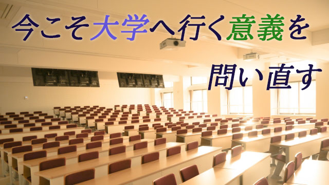

コロナの影響ですっかり影が薄くなった感のある「2020年からの大学入試の変更」の話題だが、大学のあり方がいま大きく変わろうとしていること。大学教育の意味や大学での過ごし方がかつてない程重要になっている事実に変わりはない。
これまで多くの人は大学とは学歴の最終ゴールであり、従って世間的に有名な大学に入りさえすれば就職などに有利となりその後の人生も保証されると考えていたかも知れない。
だから大学に受かるために必死に勉強する。その代わり受かってしまえば大して勉強しなくても卒業さえできれば良い。そう考えるのが一般だった。
要するに大学に入るという入口が重要であって卒業という出口は問題にならないという考え。
だがその考えは今や実情には合わず危険でさえある。
どういうことだろうか。
結論を先に言えば、大学の出口こそが重要になりつつあるということだ。
大学で何を学びどんな実力をつけたが問われる時代になったということ。
理由はたくさんある。詳しくは後述するが、以前の記事でも触れたように（「なぜみんな大学へ行くの？」）いま同世代の半数以上が大学進学する時代になり、大学生のインフレーションともいうべき状況下、大学を出たというだけではアドバンテージにはならないこともひとつの理由だ。
さらに重要な理由は、大学生を受け入れる企業側の都合としてかつてのように時間をかけて新入社員を教育する余裕がないことにある。ひと昔前までは、それこそ挨拶の仕方から始まって業務の手順やら仕事の進め方、人間関係の構築法に至るまで、つまり社会人としての礼儀作用や心がまえを徹底的に叩き込むのが常だった。
ある意味で企業は仕事だけでなく人間教育まで担ってくれたのだ。
昔、大手企業の人事部に勤めていた私の同級生が「俺たちは大学には何も期待していない。社会人教育は俺たちがやってるんだ」と豪語していたのを思い出す。
今や状況は一変。OJT（企業内研修）を丁寧にやる余力のある企業はほとんどなく、せいぜい形だけの外部委託研修があるに過ぎない。
だから会社が切に望むのは即戦力である。即戦力とは文字通り即戦力であって、悪い表現だが「すぐに使える人材」のことを言う。
それは簡単にいえば、大学で徹底的に思考力分析力を身につけ、問題の所在を的確に見抜き解決策を提示できる人間である。さらに付け加えるなら創造力豊かな人間である。その上で、業界の専門知識をある程度持っていること。
今や多くの企業つまり社会が求めているのはこのように高いハードルを超えてくる人間であって、有名大学を出たとか大手企業だから安定だろうとやって来るボーっとしたノンキ者ではない。
要するに大して勉強もせず遊んでばかりいる―今まで多かった―大学生はたとえ有名大学卒だろうがお呼びではないのだ。
大学では、いや大学だからこそ相当に厳しい勉強が必要だということだ。
親の皆さんもこのことをしっかり自覚しておくべきだと思う。
今回は大学の出口の重要性について就職という観点から述べた。
多くの人は―世間の大部分も―大学に入ることが一つのゴールだと思っているが、入ってからの方がむしろ大きな関門が待っていることを知って欲しい。
次回もこのテーマを踏まえながら議論を深めたいと思う。
エンライテックの詳細を見る ＞＞